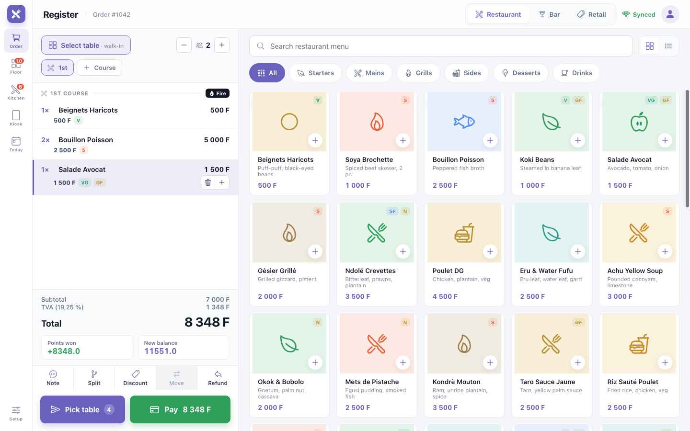
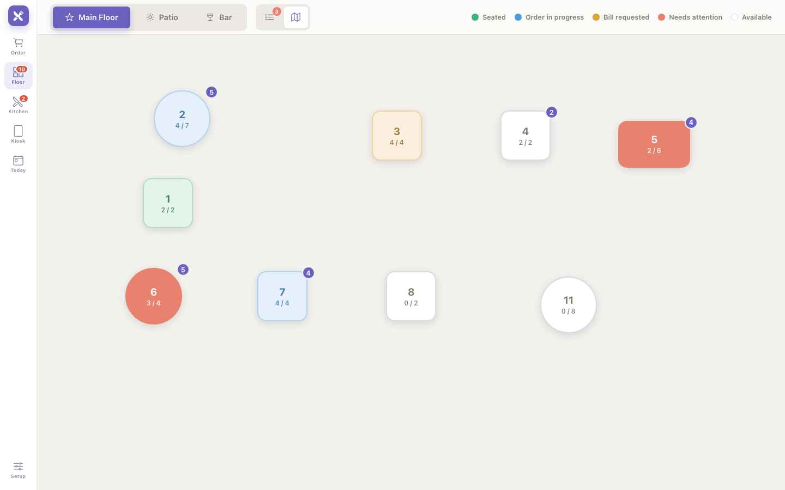
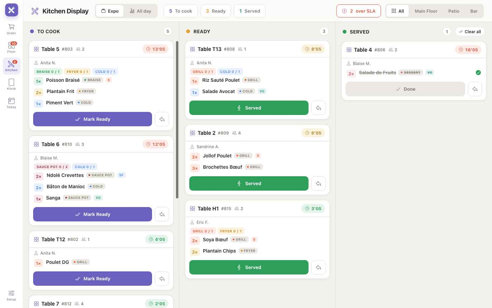
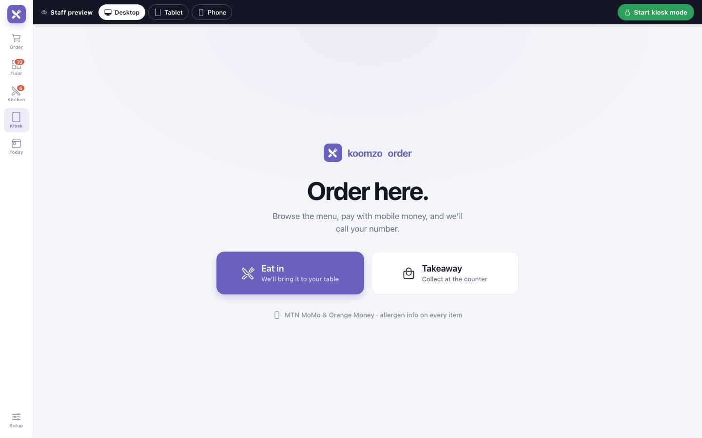
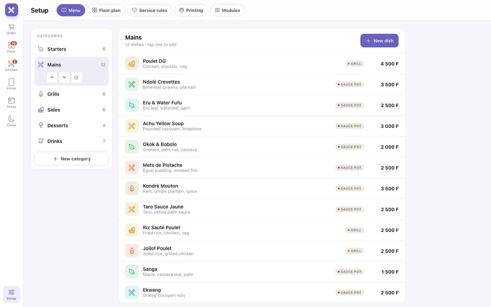
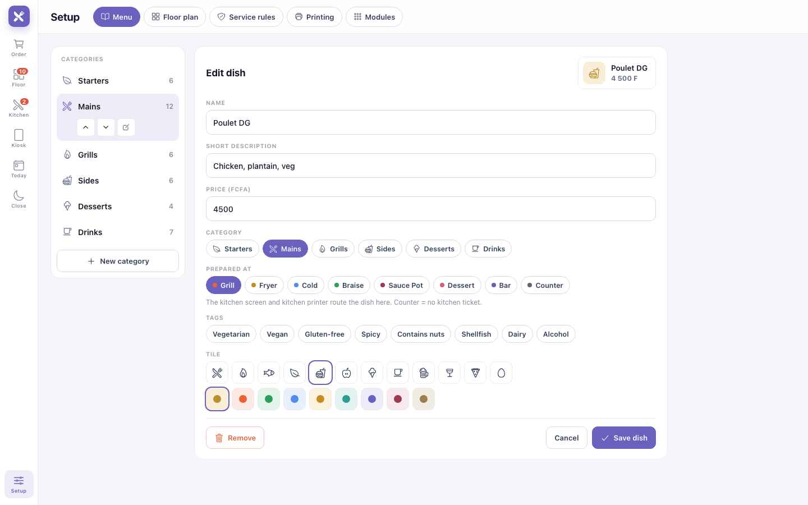
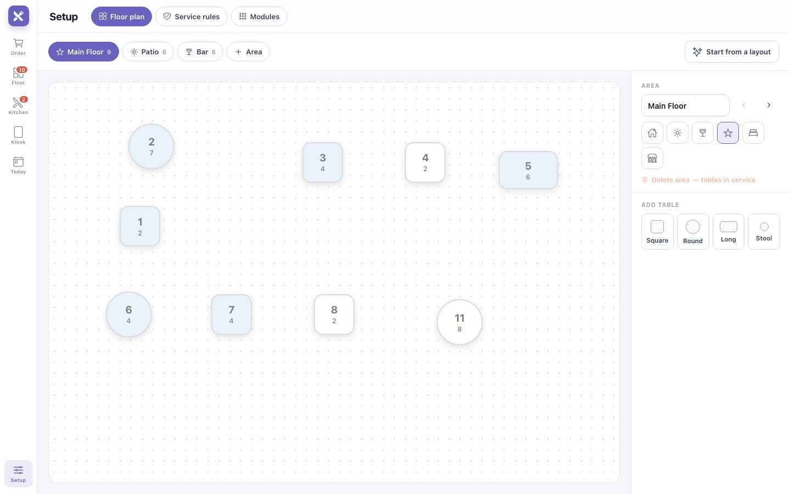
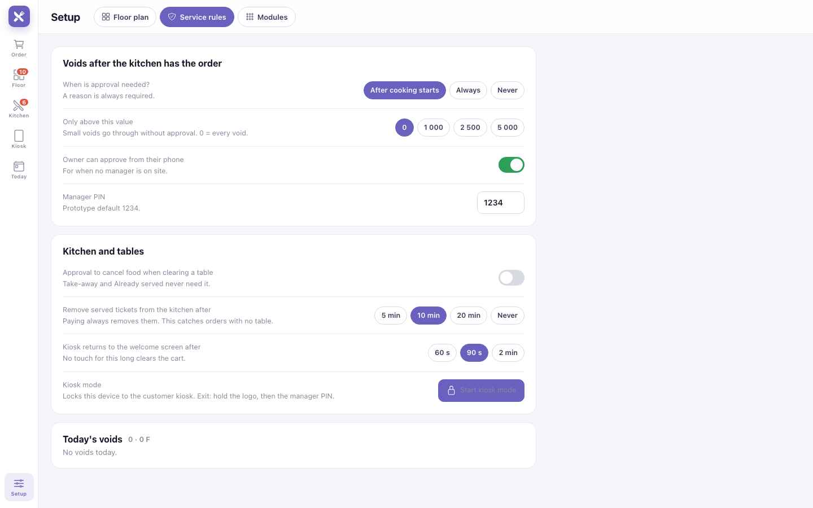

Guide de module
Restaurant & Bar
Commandes, cuisine, salle et encaissement — maquis, restaurants, bars, snacks. Les chapitres communs — appareils, hors ligne, paiements — sont dans les chapitres Plateforme.
Restaurant & Bar · Partie 1
Est-ce pour moi ?
Restaurant & Bar convient à tout lieu où l'on mange ou boit — à table, au bar ou à emporter. La configuration propose un plan de départ pour chacun :
Maquis / petit restaurant
Salle et terrasse. Le départ le plus courant.
Restaurant
Salle, terrasse et comptoir de bar.
Bar / lounge
Tabourets au bar et tables lounge.
Restaurant d'hôtel
Restaurant, bar et service en chambre.
Snack / fast-food
Commande au comptoir, quelques tables sur place.
Comptoir seulement
Pas de tables — ardoises et tickets comptoir.
Une journée chez Mama Ngono
Un maquis à Bonamoussadi, Douala : 8 tables en salle, 4 en terrasse. Mama tient la caisse ; Grace et Junior servent ; Paul cuisine ; une borne près de l'entrée ; un écran menu à la télé.
Restaurant & Bar · Partie 2
Installation Lite
Environ une heure, une seule fois. À faire avant votre premier service.
- Premiers pasCompte, établissement et personnel — voir P1.
- Choisissez un planConfiguration → Plan de salle → Partir d'un modèle. Maquis (Salle + Terrasse) est le choix habituel. Indiquez le nombre de tables par zone avant d'appliquer.
- Ajoutez votre menuConfiguration → Menu → Partir d'un modèle pour un menu tout prêt à modifier — ou créez vos catégories, puis chaque plat avec son prix et le poste qui le prépare — grill, marmite, bar. Pas à pas : Menu.
- Choisissez les paiementsLes espèces sont actives. Ajoutez MTN MoMo et Orange Money avec vos numéros marchands.
- Choisissez vos appareilsUn appareil pour commencer. Ajoutez téléphones, écran cuisine et borne plus tard — P4.
- Faites une commande d'essaiInstallez une table, commandez, envoyez, marquez prêt, encaissez et libérez. Vous êtes prêt à ouvrir.
Restaurant & Bar · Partie 3
Une journée de service
L'ordre réel d'un service, et l'écran utilisé à chaque moment.
| Moment | Ce que vous faites | Écran | Niveau |
|---|---|---|---|
| Avant l'ouverture | Allumez l'appareil principal. Vérifiez que chaque appareil est connecté et que le voyant indique Synchronisé. | Tous | Lite |
| Les clients arrivent | Touchez une table libre, indiquez le nombre de couverts. | Plan de salle | Lite |
| Prendre la commande | Touchez les plats, ajoutez des notes (sans piment, allergies), appuyez sur Envoyer. | Caisse | Lite |
| En cuisine | Les commandes arrivent par poste. Appuyez sur Prêt, puis Servi. | Cuisine | Mid |
| Entrées, puis plats | Envoyez le service 1 maintenant, lancez le service 2 quand la table est prête. | Caisse | Mid |
| Un changement | Annulez un plat envoyé avec un motif ; ajoutez des plats à tout moment. | Caisse | Lite |
| Changement de table | Déplacez le groupe, regroupez deux tables, ou passez quelques plats sur une autre addition. | Plan de salle · Caisse | Mid |
| L'addition | Demandez l'addition, partagez-la, encaissez MoMo et espèces. | Caisse | Lite |
| Libérer la table | La table redevient libre et l'écran cuisine la retire. | Plan de salle | Lite |
| Commande en libre-service | Les clients commandent à la borne ; paiement MoMo ou au comptoir. | Borne | Full |
| Fermeture | Attendez « Synchronisé ». Regardez les annulations du jour. Clôturez la caisse. | Configuration | Lite |
Restaurant & Bar · Partie 4
Les écrans
La barre de gauche change d'écran : Commande (Order), Salle (Floor), Cuisine (Kitchen), Borne (Kiosk), Aujourd'hui (Today), et Configuration (Setup) en bas. Sur téléphone, les mêmes écrans s'empilent sur une colonne.
Caisse Lite

12345678- Table — choisissez d'abord la table, ou commencez sans table et choisissez-la à l'envoi.
- Lancer (Fire) — envoie ce service en cuisine.
- La commande — touchez une ligne pour changer la quantité, ajouter une note ou, une fois envoyée, l'Annuler (Void) avec un motif.
- Catégories — Entrées, Plats, Grillades, Boissons…
- Plats — touchez pour ajouter. Les étiquettes signalent végétarien, épicé, allergènes.
- Envoyer (Send) — envoie en cuisine tout ce qui ne l'a pas encore été.
- Encaisser (Pay) — espèces, MoMo, Orange Money ou partage.
- Voyant de synchronisation — voir P3.
Déplacer (Move), au-dessus d'Envoyer, déplace tout le groupe, ou seulement les plats cochés — c'est ainsi qu'on partage une addition entre deux tables. Mid
Plan de salle Lite

12345- Zones — Salle, Terrasse, Bar. Vos propres noms, définis en Configuration.
- Liste ou plan — la liste est plus simple sur téléphone ; le plan sur tablette.
- Couleurs — vert installé, bleu commande en cours, ambre addition demandée, rouge à surveiller, blanc libre.
- Touchez une table pour installer des clients, ouvrir sa commande, demander l'addition, la Déplacer ou la libérer.
- Pastille — plats en cuisine pour cette table.
Vous libérez une table alors que des plats cuisent encore ? Koomzo demande : continuer en plat à emporter, marquer comme déjà servi, ou annuler. Rien ne disparaît de la cuisine sans décision.
Écran cuisine Mid

1234567- Colonnes — À cuire, Prêt, Servi. La plus ancienne commande en premier.
- Minuteur — passe à l'ambre, puis au rouge, quand une commande est en retard.
- Postes — ce qu'il reste à préparer à chaque poste. Full
- Prêt (Mark Ready) — le téléphone du serveur est prévenu.
- Servi (Served) — le plat est parti en salle.
- Tout effacer (Clear all) — vide la colonne Servi. Les tables payées s'effacent seules.
- Filtre par zone — une cuisine pour la salle, une autre pour la terrasse.
Un plat annulé apparaît barré avec VOID ; une note modifiée affiche CHANGED. Le cuisinier appuie sur Vu (Seen) pour que le serveur le sache.
Borne Full

1234- Aperçu personnel — voir la borne telle qu'elle apparaît sur ordinateur, tablette ou téléphone.
- Démarrer le mode borne — verrouille l'appareil : les écrans du personnel disparaissent.
- Pour sortir, appuyez longuement sur le logo, puis saisissez le PIN du gérant.
- Sur place ou À emporter — le client parcourt le menu, commande et paie en MoMo, ou paie au comptoir.
Après 90 secondes sans contact, la borne vide le panier et revient à l'écran d'accueil.
Menu Lite
Configuration → Menu. Les catégories à gauche, les plats de la catégorie à droite. Ce que vous enregistrez apparaît aussitôt en caisse, à la borne et à l'écran cuisine.

12345- Menu — premier onglet de Configuration.
- Catégorie choisie — monter, descendre, renommer. L'ordre est celui des puces en caisse.
- Nouvelle catégorie — tapez le nom, Entrée.
- Nouveau plat — dans la catégorie affichée.
- Poste — où part le plat. Touchez une ligne pour la modifier.

1234567- Nom — obligatoire.
- Description courte — la seconde ligne de la tuile.
- Prix en FCFA — obligatoire.
- Catégorie — changez-la ici pour déplacer le plat.
- Préparé à — grill, friteuse, marmite, bar… Comptoir = pas de ticket cuisine.
- Tags — végétarien, épicé, allergènes ; affichés en cuisine et à la borne.
- Enregistrer — actif dès que nom et prix sont remplis.
- Ouvrez le menuBarre latérale → Configuration (en bas) → onglet Menu.
- Vos catégoriesGardez celles qui servent, renommez-les, ou Nouvelle catégorie : Entrées, Plats, Grillades, Boissons… Réordonnez avec les flèches.
- Choisissez une catégorieTouchez-la à gauche ; ses plats s'affichent à droite.
- Nouveau platNom, description courte, prix.
- Le posteQui le prépare : Grill pour le poisson braisé, Sauce Pot pour le ndolé, Bar pour les boissons. Sans écran cuisine, chaque poste reçoit son ticket imprimé.
- Photo, tags et tuileFacultatifs. Photo : collez un lien https:// vers l'image sur votre CDN, ou Upload photo depuis le téléphone ou l'ordinateur. Elle s'affiche en caisse, à la borne et dans la liste des plats. Sans photo — ou si le lien ne répond plus — la tuile reprend son icône et sa couleur.
- Enregistrer le platIl est en caisse tout de suite. Pour corriger un prix, touchez la ligne ; Retirer l'enlève du menu.
Templates (sous les catégories, ou premier bouton d'un menu vide) ouvre les menus types adaptés à votre établissement — Maquis, Bar, Snack, Hôtel. Touchez-en un pour voir chaque plat et prix, puis Use this template. Si vous avez déjà des plats : Add to mine (les plats de même nom sont mis à jour) ou Replace. Vous obtenez votre propre copie : Koomzo ne la modifie jamais ensuite. Les prix d'exemple portent l'étiquette Check price jusqu'à ce que vous modifiiez le plat ou touchiez Confirm all prices. Changé d'avis ? Undo fonctionne jusqu'à la prochaine modification. Le même bouton sur le Plan de salle ouvre les plans types, et un menu propose le plan qui va avec.
Sous les catégories, CSV template télécharge un fichier prêt à remplir dans Excel ou Google Sheets : une ligne par plat, colonnes category, name, description, price, station, tags, image — image est un lien https:// facultatif vers la photo. Catégorie, nom et prix sont obligatoires ; les catégories inconnues sont créées. Puis Importer CSV : Koomzo affiche les plats ajoutés, mis à jour et les lignes ignorées avec leur numéro, avant d'appliquer. Ajouter et mettre à jour garde le reste du menu ; Remplacer tout le menu l'efface. Exporter le menu sort le menu actuel au même format.
Écran client Lite
Un écran tourné vers le client — l'écran arrière d'une caisse tout-en-un, une tablette ou un terminal de paiement Android — affiche chaque ligne au fur et à mesure, le total et comment payer.
- Associez-leConfiguration → Customer display affiche un code à 4 chiffres. Sur la tablette ou le terminal, ouvrez Koomzo Customer Display et saisissez le code. Sur une caisse tout-en-un avec écran arrière, touchez plutôt Open on second screen — sans code.
- VérifiezShow test screen affiche une commande d'exemple pendant 8 secondes. La caisse indique Display en vert quand l'écran est connecté.
- Choisissez ce que le client peut toucherNuméro de fidélité, choix du reçu (WhatsApp, SMS, imprimé, aucun) et pourboire — chacun a son propre interrupteur. Ce que le client touche arrive sur votre caisse comme une suggestion : Accept ou Ignore. Rien n'est appliqué tout seul.
- Réglez l'écran d'accueilUne phrase d'accueil et jusqu'à 3 visuels promo, affichés quand personne n'est servi. Choisissez le français ou l'anglais pour l'écran — vos propres écrans ne changent pas.
Les coûts, notes cuisine, motifs d'annulation, noms et PIN du personnel, autres tables ou tickets en attente, numéros de téléphone complets. Une ligne retirée s'affiche barrée un instant, puis disparaît. Si l'écran perd la caisse pendant 5 secondes, il grise le total et affiche Reconnexion… plutôt qu'un ancien montant.
Tables : une caisse comptoir passe d’une table à l’autre toute la soirée ; l’addition d’une table n’apparaît donc à l’écran que lorsque vous ouvrez Print bill ou Pay pour elle. Les commandes comptoir, à emporter et ardoises s’affichent pendant la saisie. Réglage : Configuration → Customer display → Table orders.
Configuration Lite

1234- Zones — ajouter, renommer, réordonner. Mid
- Modèles — les plans types Koomzo, avec le nombre de tables par zone.
- Faites glisser les tables sur tablette. Sur téléphone, modifiez-les en liste.
- Ajouter une table — carrée, ronde, longue ou tabouret de bar. Indiquez son nom et ses places.

12345- Validation des annulations — après le début de la cuisson, toujours, ou jamais. Full
- Le patron valide depuis son téléphone quand aucun gérant n'est sur place.
Bientôt - Les tickets servis quittent la cuisine après 10 minutes.
- Le mode borne peut aussi être démarré ici.
- Annulations du jour — par motif et par serveur.
Restaurant & Bar · Partie 5
En cas de problème
Continuez sur batterie. Chaque commande est déjà enregistrée. Au retour du courant, rouvrez l'application — les tables ouvertes reviennent telles quelles.
Prenez des espèces, ou gardez l'addition ouverte et confirmez le MoMo au retour d'internet. Tout le reste continue.
Les téléphones continuent de prendre et garder les commandes. Rechargez-le et rallumez-le — ou un gérant désigne un autre appareil principal. Bientôt
Libérez la table et choisissez Annuler. C'est enregistré comme annulation et montré en cuisine.
En libérant la table, choisissez Déjà servi. Les tickets servis quittent aussi l'écran seuls après 10 minutes.
Ouvrez la commande → Déplacer → choisissez la bonne table. Le ticket cuisine est corrigé.
Configuration → Règles de service → Annulations du jour montre qui a annulé quoi, quand, pourquoi, et qui a validé.
Une modification n'a pas pu être acceptée par le cloud. Le gérant l'ouvre et choisit ce qu'il garde. Rien n'est perdu.
Restaurant & Bar · Partie 6
Aller plus loin
Activez ces fonctions dans Configuration → Modules quand vous êtes prêt.
Services Mid
Retenez les plats jusqu'à ce que les entrées soient débarrassées, puis lancez-les.
Postes de cuisine Full
Grill, marmite, friteuse, bar — chacun ne voit que ses plats.
Totaux du jour Full
« 12 Ndolé à préparer » sur toutes les commandes ouvertes.
Ardoises au bar Full
Ouvrez une ardoise au nom du client et réglez à la fin.
Mettre sur la chambre Mid
Les restaurants d'hôtel portent l'addition sur la chambre du client.
Règles d'annulation Full
PIN du gérant pour les annulations ; validation du patron par téléphone. Bientôt
Impression en cuisine Bientôt
Pas d'écran cuisine ? Une imprimante Bluetooth par poste imprime chaque commande et chaque annulation.
Stock des boissons Bientôt
Chaque bière vendue sort du stock. Comptez chaque semaine et voyez ce qui manque.
Plusieurs établissements Full
Deux maquis, un seul patron, un seul jeu de chiffres.
À imprimer et afficher
Fiches du personnel
2. Commande → plats → Envoyer.
3. Un changement ? Touchez le plat → Annuler + motif.
4. Le téléphone indique Prêt → servez.
5. Salle → Addition.
2. Ouvrez la table → Encaisser.
3. MoMo : numéro → attendez la confirmation.
4. Libérez la table.
5. Fermeture : attendez « Synchronisé » → clôturez.
2. Terminé → Prêt.
3. VOID ou CHANGED ? Lisez → Vu.
4. Le plat part → Servi.
Guide utilisateur Koomzo · Restaurant & Bar · Version 2 · Les écrans montrés sont ceux du prototype Koomzo actuel. Les noms, plats et prix sont des exemples.